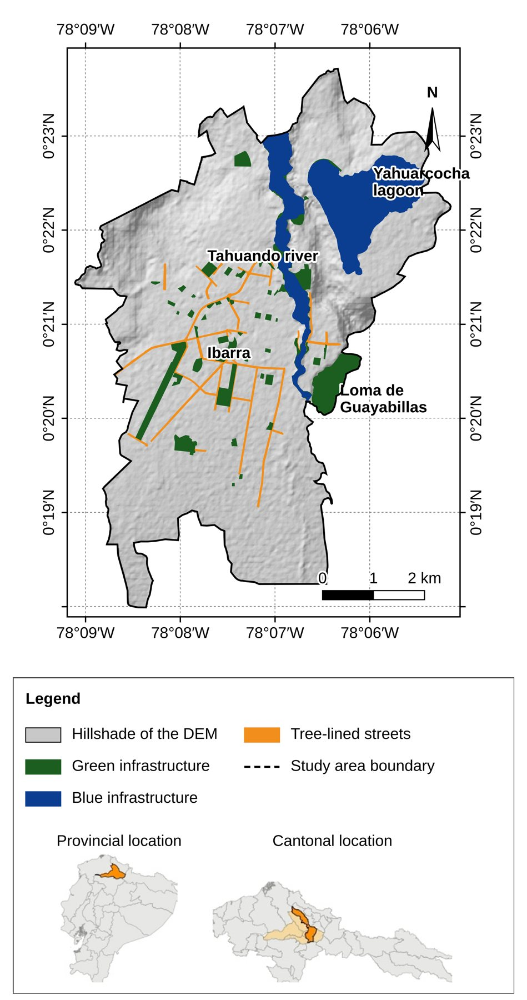
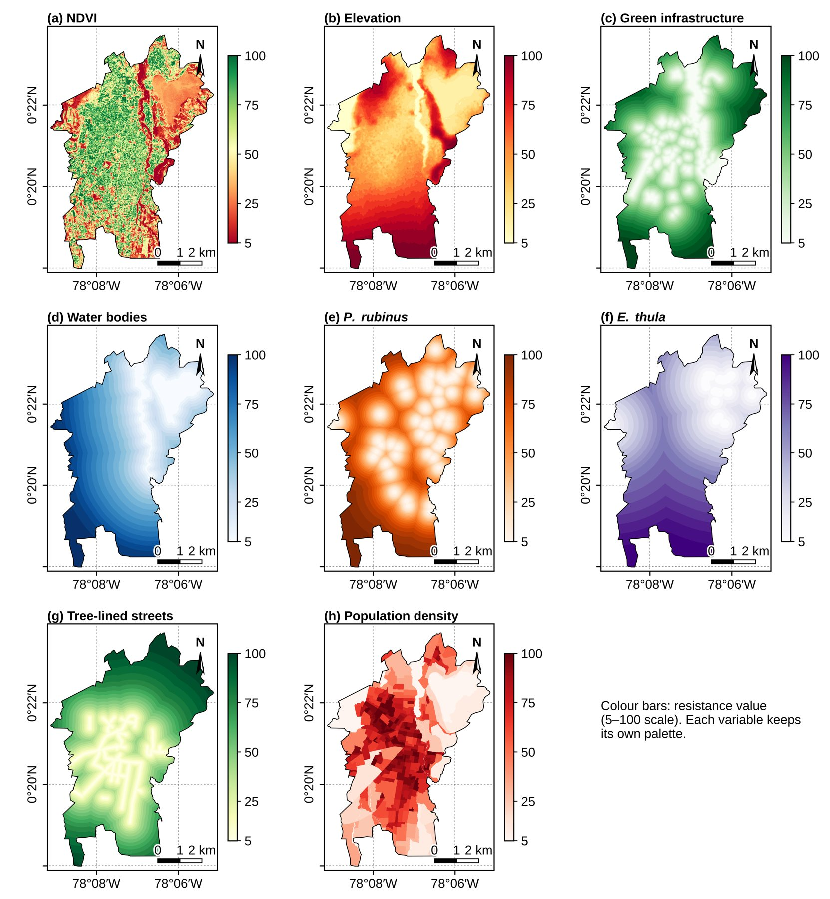
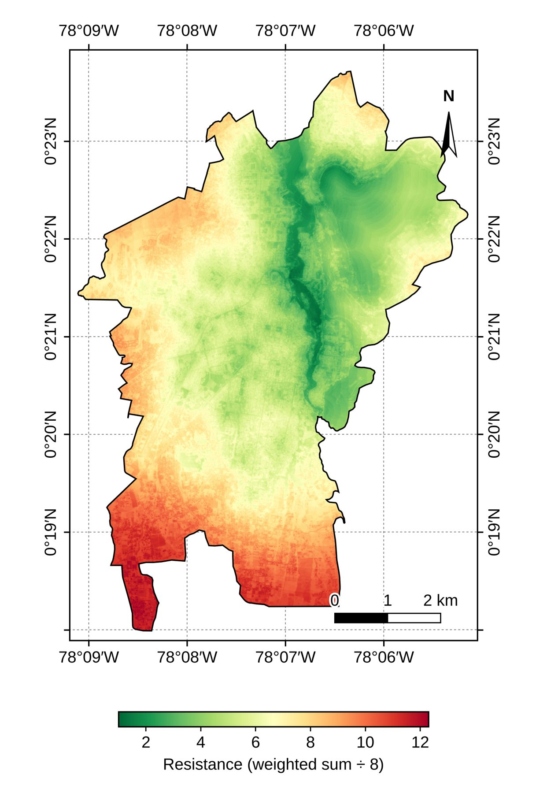
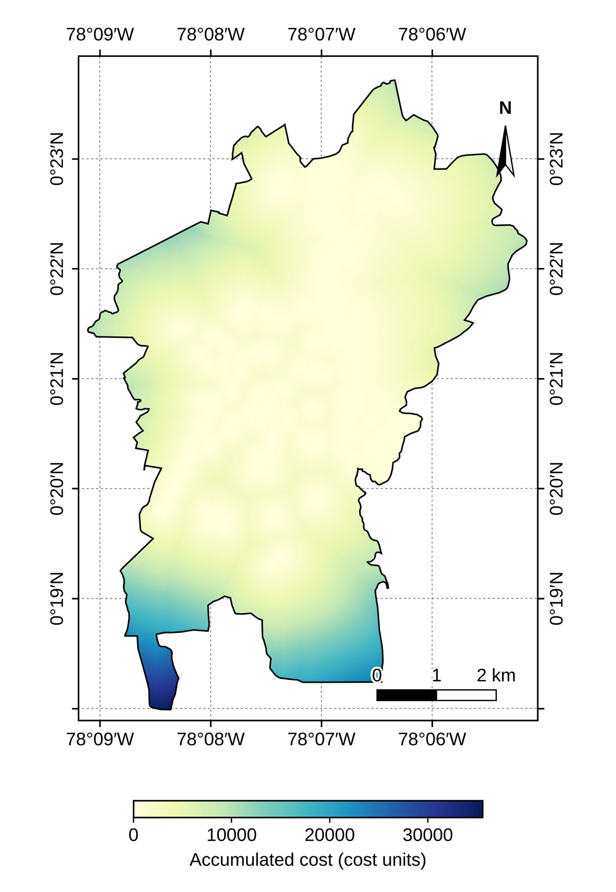
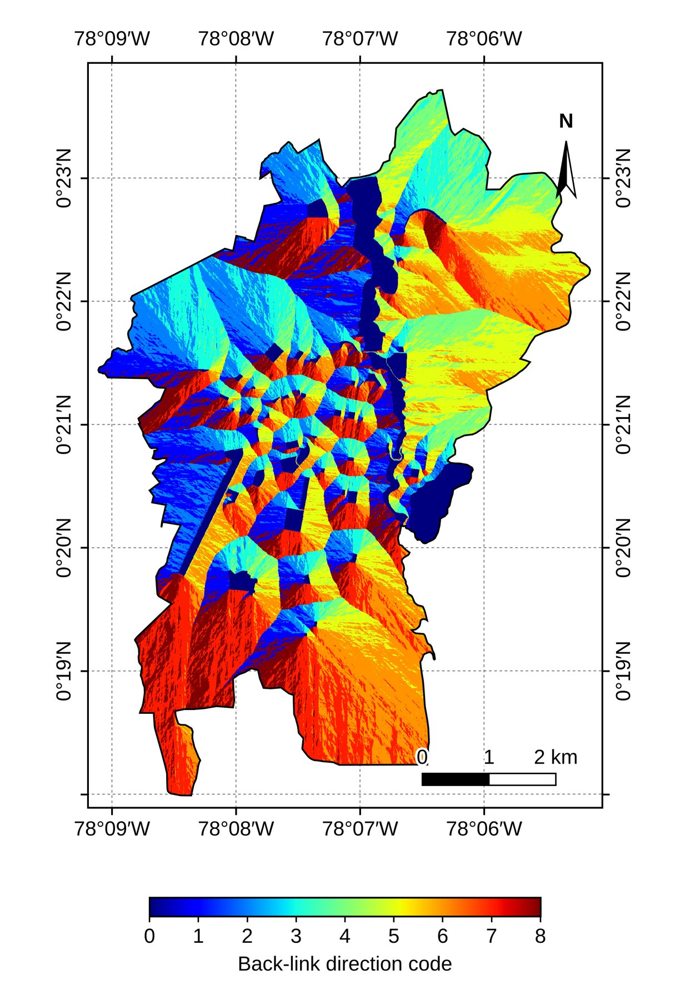
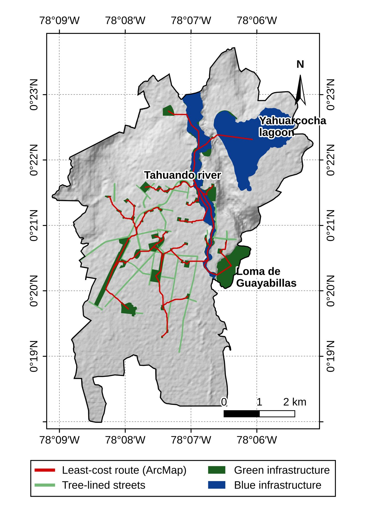
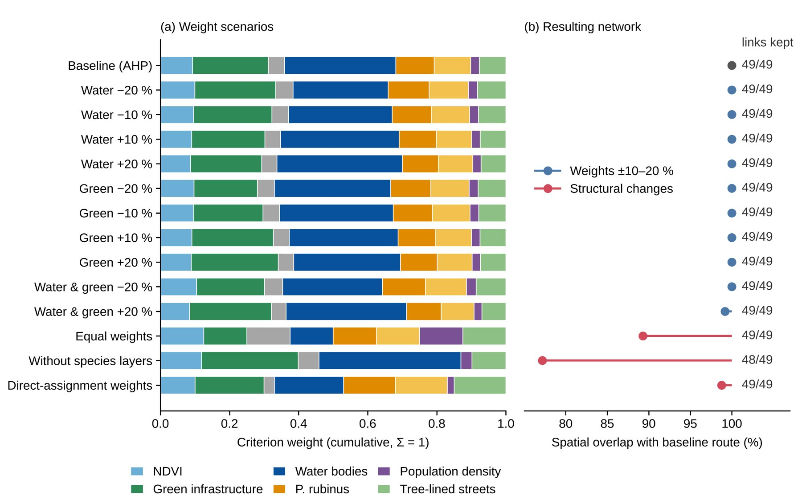
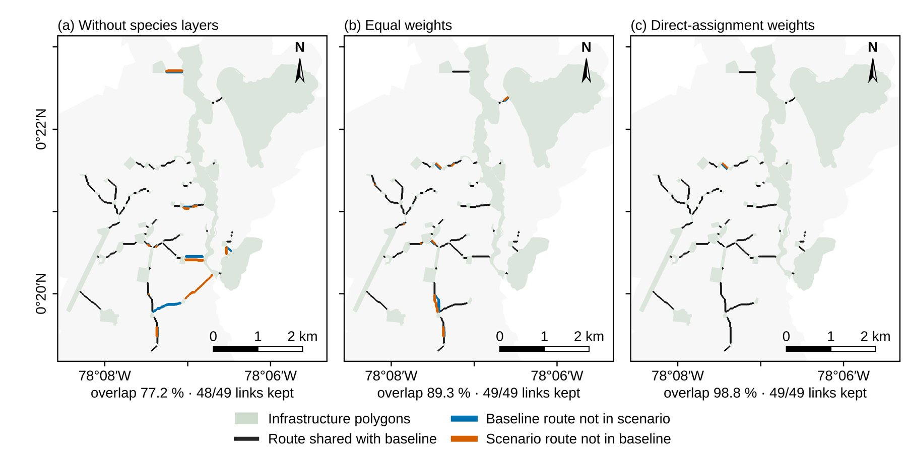

Conectar la ciudad con su naturaleza
Conectividad ecológica urbana en Ibarra, Ecuador, con Least-Cost Path y AHP.
Ibarra, vista a 360°
Arrastra para mirar alrededor.
Ibarra crece. Su verde y su agua se fragmentan.
Ninguna estrategia formal conecta hoy la infraestructura verde y azul dentro de la ciudad.
Una ciudad andina a 2.225 m de altitud
Cinco parroquias urbanas más La Esperanza, 115 km al norte de Quito.

Ocho capas. Un solo mapa de resistencia.
Resistencia 5 a 100
Cada capa en 20 clases por cuantiles.
Pesos con AHP
Razón de consistencia 0,089, bajo el umbral de 0,10.
Cost Connectivity
Árbol de expansión mínima entre regiones.
El agua pesa más que la vegetación.

La densidad poblacional funciona como restricción humana, no como atractor ecológico.
Dónde cuesta más moverse



50 regiones conectadas por 49 rutas
Resistencia media de las rutas: 40,6 frente a 49,8 en toda el área.

La red, vista sobre el relieve
Las rutas buscan los sectores de menor resistencia entre 2.008 y 2.554 m de altitud.
Arrastra el modelo para girarlo.
Catorce escenarios. La red casi no cambia.
Los nodos definen la topología. Los pesos solo ajustan el trazado local. Verificado también en ArcMap.
Cuando cambian los pesos, solo se mueve el trazado


Una base para planificar Ibarra
Una red de 50 regiones y 49 rutas, estable frente a 14 escenarios.
Flujo reproducible con datos abiertos y herramientas SIG estándar.
Cooperación interinstitucional que fortalece la investigación
Dos universidades ecuatorianas, un mismo modelo de conectividad.
Aquí finaliza la investigación.
Aquí comienza el aprendizaje basado en problemas
¿Cómo aprende alguien a hacer esto?
Con un problema real, una herramienta guiada y una interpretación de los resultados.
Sin licencias, sin instalar, con tus propios datos.
Cuatro herramientas. Cero instalación.
Laboratorio Estadístico Interactivo
8 módulos con tus datos: normalidad, T-Student, Chi², ANOVA, colinealidad (VIF), Bayes y diseño experimental.
Explora, practica y conecta tus datos.
El detalle visual de la investigación está en nuestro Story Map.
UTN, ESPOL y Preventive Health
Es momento de conversar
Gracias por su atención. Sus preguntas hacen crecer esta red.